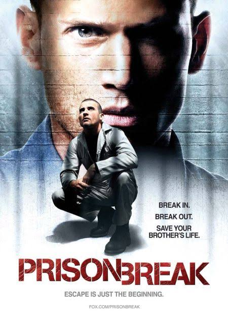

Prison Break
Michael scoffield is a man who has been wrongly accused of a crime and sent to prison. He is determined to escape and clear his name, and he uses his intelligence and resourcefulness to plan a daring escape from the prison. Along the way, he faces numerous challenges and obstacles, but he never gives up on his goal. The show is full of suspense, action, and drama, and it keeps viewers on the edge of their seats as they follow Michael's journey to freedom.
View film details
Need for Speed
The story follows Tobey Marshall, a street racer who is falsely imprisoned after a race leads to his friend's death. After being released, he enters a dangerous cross-country race to seek revenge against the rival who betrayed him.
View film details
Mouse Hunt
String magnate Rudolph Smuntz dies, bequeathing his financially cash-strapped factory and a dilapidated Victorian mansion to his sons Ernie and Lars. Following the will reading, both brothers suffer setbacks in their lives—Ernie, who shunned the family business to become a chef, accidentally loses his restaurant when a cockroach hidden in a box of cigars he inherited from his father's estate contaminates a meal he is serving to the mayor, causing the mayor to suffer a fatal heart attack, while Lars is thrown out by his greedy wife April, after he honored a promise to his late father to refuse letting a rival company, Zeppco International, buy the factory.
view film details